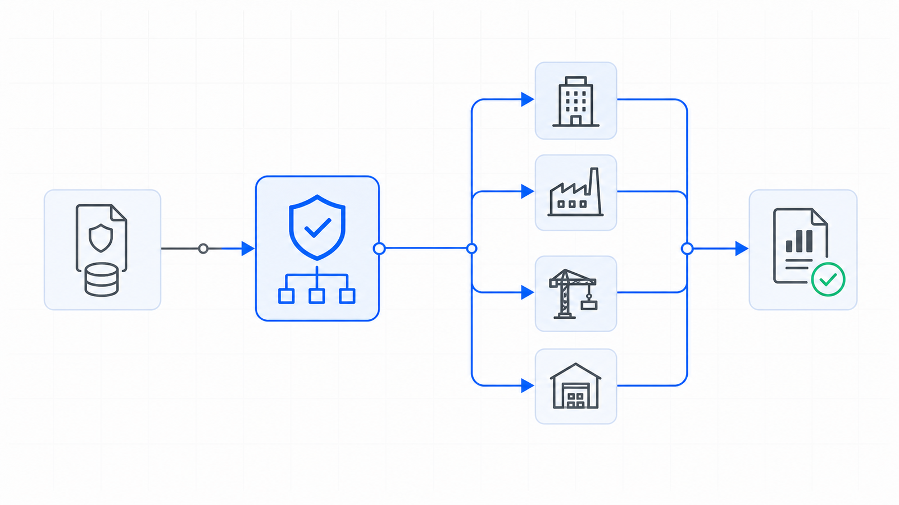

SFS-E43-GAA · COST ALLOCATION · REV 2026-07-24 · PRODUCTION
PRODUCTION = runnable end-to-end, CI-backed, full test suite passing. All data fictional and seeded.
G&A Expense Allocation
Did the whole pool leave the holding entity, and land where the drivers say?
A management or holding entity carries the group's shared cost -- corporate G&A, shared overhead, the postage meter -- and none of it belongs to it. Every month a recurring workbook turns a column of driver counts into a column of percentages, multiplies them by that month's cost pool, and generates the journal entry that pushes the cost out to the operating entities and projects that consumed it. The workbook is copied forward every month, which is exactly why it drifts. This engine reads the eight artifacts that workbook emits -- the month calendar, the recipient lookup, the driver tab, the cost-pool ledger, the allocation schedule, the allocation journal, the postage log and the year-to-date rollup -- and runs twenty-two deterministic controls over them. Is the file complete, does the year run month by month with every tab present and stamped to its own month end, is the recipient lookup sound and does it exclude the holding entity that cannot allocate to itself, is the driver tab whole and does it cover every recipient in every month, does the cost pool add to its components and did it step month over month, do the shares sum to exactly 10000 basis points and re-derive from the drivers, do the allocated amounts tie the pool and re-derive as pool times share, does the generated entry balance, tie the re-derived allocation and net to zero at consolidation, does the postage split reconcile to the physical meter, and does the year-to-date rollup recompute from the tabs beneath it. It compares every figure with exact ==, splits by largest remainder so the residual cent lands in exactly one place, measures every accounting date against the period stamped in the file rather than the system clock, and never writes to a source artifact.
A G&A allocation is the least-audited schedule in a group's close, because it looks like the safest: a column of percentages, a cost pool, and a formula between them. That is exactly why it drifts. None of the ways it goes wrong look wrong on the face of the tab. The share column sums to 99.97% and quietly leaves cost behind in the holding entity, every month, for as long as the workbook is copied forward. Two shares are moved against each other, the column still sums to 100.00%, and the split is no longer the one the drivers support. Two recipients' amounts are transposed, the column still ties the pool to the cent, and the cost has landed on the wrong books. The entry balances and no longer matches the schedule it was posted from, because a debit was retyped and the credit was moved with it. An entity is charged and relieved inside one entry, so both sides inflate and nothing actually moves. A month is never rolled, or is rolled and stamped to the date of the month it was copied from, so real cost posts into the wrong period. The engine rebuilds every share from the driver counts, every amount from the share and the pool, and the entry from both, through the same kernel that produced the data, and compares with exact ==. It ties the postage component to the physical meter, the only figure in the workbook with a counter behind it. It ships a planted-defect file for every registered control, and states its benchmark as a command rather than a claim.
Nine control families run in registry order over each allocation file. The first proves the others had something to read, because a control that passes on absent evidence reports assurance it never performed.
an allocation a cent off the pool is a break, not a rounding band
What it does for you
plain terms
A management or holding entity carries corporate G&A, shared overhead and the postage meter for a group of operating entities and projects, and none of that cost belongs to it. Every month a recurring workbook -- one tab per month, a driver tab and a lookup tab behind it, a stamped accounting date per period -- turns a column of driver counts into a column of percentages, multiplies them by the month's cost pool, and generates the allocation journal entry. The workbook is copied forward every month, which is precisely why it drifts. Four failures hide inside that, and none of them look wrong on the face of the tab. The share column sums to 99.97% and quietly leaves cost behind in the holding entity, or sums past 100.00% and over-relieves it, every month for the rest of the year. The allocated column was rounded recipient by recipient rather than by a largest-remainder split, or was left stale, and no longer ties the pool it divided -- or ties it exactly while two recipients' amounts sit transposed, so the cost landed on the wrong books. The generated entry balances and no longer matches the schedule it was posted from, because a debit was retyped and the credit was moved with it, or an entity was charged and relieved inside the same entry so both sides inflated and nothing actually moved. And a month was never rolled, or was rolled and stamped to the date of the month it was copied from, so a period is absent from the year or posts real cost into the wrong accounting period. None of these are judgment calls. They are equalities -- a share column against 10000 basis points, an allocated column against the pool, an amount against pool times share, a net debit against the re-derived allocation, a postage line against a physical meter reading, an accounting date against the last day of its own month -- which a deterministic control settles better than a spreadsheet inherited by whoever runs the close this year.
The seeded demo runs every control over every allocation file7. The CLI generates twenty-four fictional allocation files -- one clean baseline and one carrying each of the twenty-three planted defects -- then runs all twenty-two controls over each. The clean file returns PASS with no flags; every defect file returns REVIEW or FAIL and names the control it tripped along with the reason that control exists.
A share column that still sums to exactly 100.00%8. One defect file moves two shares in the opening month against each other by twenty-five basis points. The column still sums to 10000 bps, so the sum control holds and nothing on the tab looks wrong. alc_shares_rederive rebuilds both shares from the driver counts by largest remainder and fails them, proving the share column is a derivation the engine recomputes rather than a constant it reads back.
An entry that balances and does not tie the schedule9. Another defect file reduces one recipient's debit and moves the holding entity's credit with it, so the March entry balances to the cent. je_balanced holds. je_ties_allocation rebuilds the allocation from the drivers and the pool, reads the entry net of any offsetting credit on the same recipient, and fails the line -- the schedule and the entry posted from it had parted company.
Functional block diagram
engineering · each block links to its source
Plain terms
Seeded Allocation Files. fictional G&A allocation workbooks enter the control registry
Structural Precondition. is the allocation file complete and the year and holding entity named
Period Continuity. does the year run month by month, each tab complete and stamped
Recipient Lookup. is the lookup sound and the holding entity excluded
Driver Tab. is the basis whole and complete for every recipient-month
Cost Pool. does the pool add up, and did it step
Allocation Re-Derivation. do the shares and the amounts re-derive and tie the pool
Allocation Journal Entry. does the entry balance, tie the schedule and net to zero
Postage Meter. does the postage reconcile to the physical counter
Year-to-Date Rollup. does the reported rollup recompute from the tabs
Tabs, Lookups & Kernel. the artifacts and the one kernel every rule resolves against
Verdict and Findings. every finding, with the reason it exists, ends at a person
Engineering
Seeded Allocation Files. generate_corpus writes one clean baseline plus one planted-defect file for every registered control, twenty-four files in total. Only the month calendar, the recipient lookup, the driver counts, the two discretionary pool components and the postage meter readings are stated as base facts; every share, every allocated amount, the per-code postage split, the pool's postage component and total, the journal entry and the year-to-date rollup are recomputed through the same allocation kernel the engine later re-derives with, so the relationships the engine tests are the relationships that produced the data.
Structural Precondition. One control. FAILs a file missing any of the eight artifact types or carrying a duplicate, an unreadable opening month, or no named holding entity, so no downstream rule holds vacuously on absent evidence.
Period Continuity. Two controls: the calendar runs consecutive readable months from the stated opening period with no gap and no repeat, and every month carries one pool, one entry, one meter reading, driver and allocation rows, and an accounting date that is the last day of the month it allocates.
Recipient Lookup. Three controls: unique recipient ids, every row carrying an id, a name, a known kind and a GL account, and the holding entity absent from the list of recipients it is allocating to.
Driver Tab. Two controls: driver counts are whole and non-negative with a non-zero total in every month, and every recipient carries exactly one count in every month with no count belonging to a non-recipient.
Cost Pool. Two controls: the shared overhead, corporate G&A and postage components add to exactly the stated pool total, and a month-over-month step beyond the file's variance band is flagged for a person rather than failed.
Allocation Re-Derivation. Five controls: one allocation row per recipient-month, shares summing to exactly 10000 basis points, every share rebuilt from the driver counts, the allocated column tying the pool to the cent, and every amount rebuilt as pool times share by largest remainder.
Allocation Journal Entry. Three controls: debits equal credits in every period entry, each recipient's net position equals its re-derived allocation with no line posted outside the group, and the year nets to zero at consolidation with no entity both charged and relieved inside one entry.
Postage Meter. Three controls: the meter reads forward inside each month and opens where the prior month closed, the per-code split sums to exactly the meter delta on codes the policy recognises, and the pool's postage component equals that same delta.
Year-to-Date Rollup. One control: the period count, the recipient count, the pool total and the allocated total stated on the rollup are rebuilt from the month tabs, with the allocated total compared only when every month re-derived.
Tabs, Lookups & Kernel. The period calendar carries each month and its stamped accounting date; the recipient lookup carries each operating entity and project, its kind and its GL account, with the holding entity excluded; the driver tab carries one count per recipient-month; the cost-pool ledger carries the three components and the total; the allocation schedule carries the share in basis points and the allocated amount; the journal carries the generated entry; the postage log carries the meter readings and the per-code split; and the rollup carries the year-to-date figures. Every continuity, share, amount, entry, postage and rollup control resolves against these through the shared allocation kernel, so a finding cannot disagree with the data that produced it.
Verdict and Findings. Findings roll up per allocation file: any FAIL is FAIL, FLAGs without FAILs are REVIEW, clean is PASS. The CLI exit code is the verdict, so a pipeline can gate on it. Reports carry no timestamps or absolute paths, which is what makes the committed report diffable.
Instruction set
every public command
Command
Operation
Output
Exit
Artifacts
python run.py
regenerate the seeded fictional corpus, run all twenty-two controls, write both reports
per-file verdicts and every actionable finding, then the overall verdict
2 for the bundled corpus, which carries a planted defect for every control by design
gaalloc_report.json, gaalloc_report.md, samples/
python -m gaalloc_engine samples
analyze an existing folder of allocation files without regenerating it
100 percent of controls with a planted defect no control ships without a file demonstrating it firing
Control characteristics
engineering
Plain terms
The engine has no write path and therefore no autonomy to gate. It re-derives the allocation journal entry and compares it; it does not post it. A person decides whether a month is carried into the close and whether a pool step is a real change in the cost base.
Demo gate. FAIL on the bundled corpus, by design -- it carries a planted defect for every registered control
Severity
Verdict
Action
No findings above PASS
PASS
carry the mechanically clean allocation into the documented close review and sign-off
One or more FLAG, no FAIL
REVIEW
a human resolves each flag; a cost pool that stepped month over month beyond the file's variance band lands here, and a person says whether the group's cost base changed or a component was typed into the wrong month
One or more FAIL
FAIL
the month is not carried into the close until the failing control is cleared -- a missing or misstamped tab, a share column off 100.00%, an amount that does not re-derive, an entry that does not balance or does not tie the schedule, or a postage line the meter does not support
Read-only: allocation files are parsed and never written back, and nothing is posted, filed or paid, so the engine cannot introduce the break it reports.
Integer cents and whole basis points throughout, compared with exact ==; there is no tolerance band on an allocation, and a cent off the pool is reported as a break.
An amount that should be integer cents but is not produces an AMOUNT_INVALID finding contained to the one row it was read on, rather than being coerced into the number the engine is meant to audit.
One allocation kernel: the controls and the generator share gaalloc_engine.allocation, so a finding cannot disagree with the data that produced it.
Largest remainder everywhere it matters: driver shares sum to exactly 10000 basis points and allocated amounts sum to exactly the pool, so the residual cent lands in exactly one deterministic place rather than being rounded away recipient by recipient.
Every accounting-date test is made against the period stamped in the file, never the system clock, so the same file returns the same findings in any month it is run.
Deterministic and byte-stable: same inputs produce the same findings in the same order, with no timestamps or absolute paths in any output.
Absent evidence is never a passing control; a missing artifact fails completeness rather than letting the controls that read it pass unread, and each family's precondition owns its own gap so a lost row is named once rather than reported three times downstream.
Operating limits
what it refuses to do
The engine never posts an entry, files a return, pays a supplier, or writes to a source artifact. It re-derives the allocation and compares it, then stops.14
It reads the eight artifacts the allocation workbook emits. It does not connect to a general ledger, an accounts-payable system, a payroll feed or the postage meter itself.15
It is about where a shared cost lands, not whether it should have been incurred, and not whether the driver the policy names -- headcount-equivalents, units, doors -- is the right basis for the group. It checks that the basis was applied, not that it was chosen well.16
The month-over-month variance band is a review signal read from the file itself, defaulting to 500 basis points; it is not a materiality judgment, and a pool step inside the band is not asserted to be correct.17
It takes the driver counts and the meter readings at face value: it confirms the workbook derives from them and reconciles, not that the counts were captured correctly or the meter was read honestly. All shipped data is fictional and the fiscal year is set in a fictional future.18
See it run
control architecture

The G&A Expense Allocation engine tile states the identity that has to hold every month: the driver counts set the shares, the shares and the pool set the amounts, the amounts set the entry, and every one of those figures is recomputed from the tab beneath it rather than read back.
One conversation: you describe the work that consumes your team's month; we tell you plainly what this engine can take over, what it can't, and what a scoped first phase would cost. Your people keep approval authority.